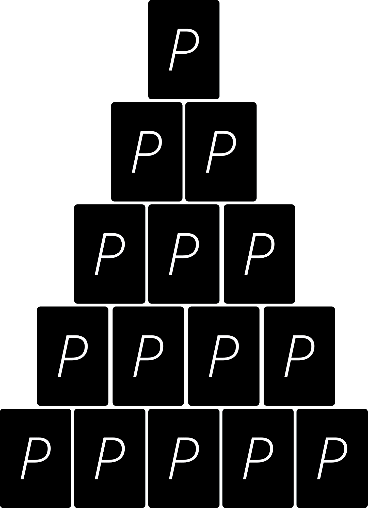

Blufftriangel
Antal spelare
Minst 2 st. Rekommenderat 4-10 st.
Du behöver
Kortlek, något att dricka.
Beskrivning
Dela ut 5 kort till varje spelare och skapa sedan en triangel av kort med framsidan nedåt mitt på bordet. Triangelns storlek är frivillig men 5 rader är rekomenderat (se figur). Varje spelare skall komma ihåg valörerna
och ordningen på alla sina kort och sedan lägga sina kort med framsidan nedåt på bordet.

Första kortet vänds därefter upp på raden längst ned (raden med 5 kort). Om någon har kortet som visas kan denna spelaren välja att dela ut 2 klunkar till någon medspelare (om man har fler av samma kort får man ge 2 klunkar per kort). Man kan även välja
att
bluffa att man har kortet, därav namnet “Blufftriangel”, och dela ut klunkar fast att man inte har kortet. När en spelare blivit tilldelad klunkar har denna ett av två val; antingen dricker spelaren de tilldelade klunkarna eller
så
callar den bluffen. Om man callar en bluff måste spelaren som gav klunkarna vända upp så många av sina kort som behövs för att visa att den faktiskt hade de kort den påstod. Om man bluffar och någon callar bluffen måste man dricka dubbelt
så många klunkar som man gav ut. Om man kallar en bluff som visar sig vara sann måste spelaren som callade dricka dubbelt så mycket som den blev tilldelad från början. Om man talar sanning men råkar visa fel kort är effekten densamma som om man
faktiskt hade bluffat, man dricker då dubbelt så mycket som man delade ut. Detta fortsätter tills nästa rad nås, då fortsätter leken likadant med skillnaden att alla tilldelade klunkar ökar med 2 (dvs blir 4, 6, 8, 10 och så vidare för varje ny
rad).
I slutet säger varje spelare valören på sina kort, ett kort i taget, och vänder upp dessa. För varje fel som visas får 5 klunkar drickas.
Tillägg Om man är många spelare kan det bli så att varje spelare får ganska få kort. Då kan man istället köra att varje spelare ska komma ihåg både valör
och färg på sina kort. Då måste man dricka 5 klunkar för varje fel på valör
och 5 klunkar för varje fel på färg man har.